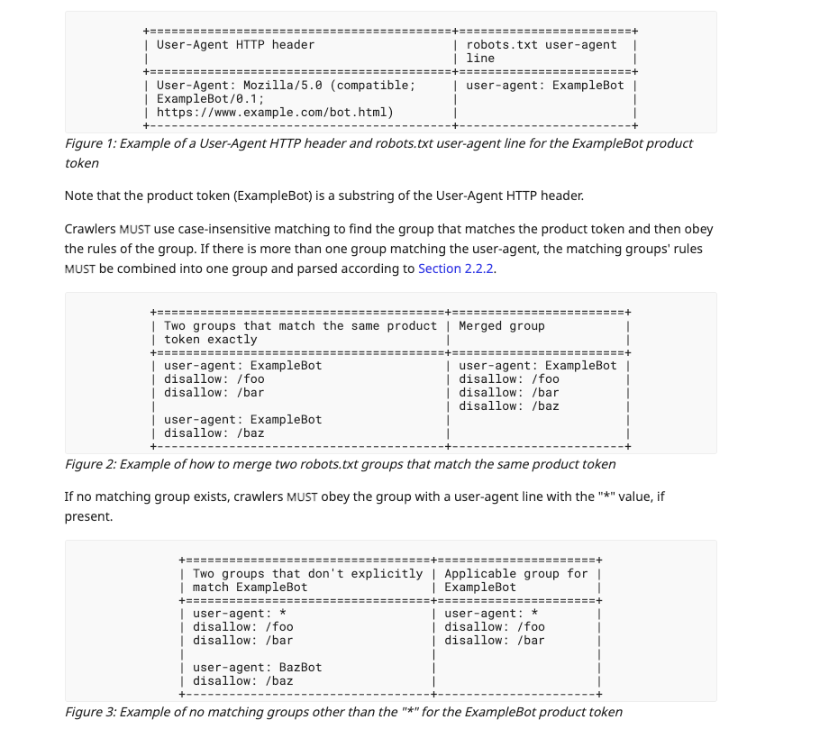

robots.txt
RFC 9309 defines the robots.txt standard. Originally made by Martijn Koster in 1994 (the original spec), because robots kept crawling sites and causing a ruckus. (Seems mighty familiar to today’s AI bots, doesn’t it?) The standard has been (barely) updated over the years, and this plugin implements the latest version.

It’s generated at build time. It can be disabled, replaced, or merged with an existing file.
Basic rules
robots: {
userAgent: "*",
disallow: ["/api", "*.gif$"],
allow: ["/public"],
crawlDelay: 5,
cleanParam: ["sessionid"],
host: "example.com",
sitemap: "https://example.com/sitemap.xml",
disallowNoindex: true,
}
userAgent: who the rules apply to. Default*disallow: paths to block. Supports*(match anything) and$(end of string)allow: paths to explicitly permit, overridingdisallowcrawlDelay: delay in secondscleanParam: URL parameters to ignore when crawlinghost: theHost:recordsitemap: URL to advertise, orfalseto omit. Defaults tosite.url + /sitemap.xmldisallowNoindex: also block pages withnoindex: true
Wildcards
* matches any sequence of characters. $ matches the end of the URL.
disallow: ["/api", "*.gif$", "/private/*"];
/apiblocks/api,/api/foo,/api/foo/bar(basically anything under it)*.gif$blocks/img/cat.gifbut not/img/cat.png(which… is obviously not a GIF)/private/*blocks everything under/private(also/private/foo,/private/foo/bar, etc.) but not/privateitself. Use/privateto block that too.
allow takes priority when a path matches both. So allow: ["/public"] lets crawlers through even if disallow: ["/"].
Agent groups
Different crawlers get different rules:
robots: {
groups: [
{
userAgent: "GoogleBot",
disallow: ["/private"],
crawlDelay: 2,
},
{
userAgent: "BingBot",
allow: ["/"],
},
],
}
Each group has its own userAgent, disallow, allow, crawlDelay and cleanParam. The default group (top-level fields) applies to *.
Merge with an existing file
By default the plugin preserves robots.txt in the output directory and appends generated rules. Duplicates are dropped.
To overwrite instead, set merge: false:
robots: {
merge: false;
}
noindex and crawling
A page with noindex: true tells crawlers not to index it. By default it does not add a Disallow rule, so crawlers can still reach the page to see the directive.
To block crawling outright:
robots: {
disallowNoindex: true;
}
Raw lines
Append literal lines after the generated rules:
robots: {
rules: [
"User-agent: *",
"Disallow: /",
],
}
Use this when the plugin does not cover something. The lines are emitted verbatim.